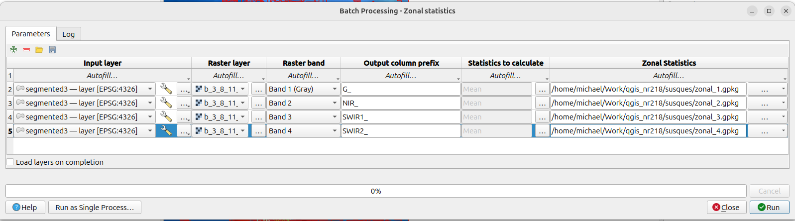
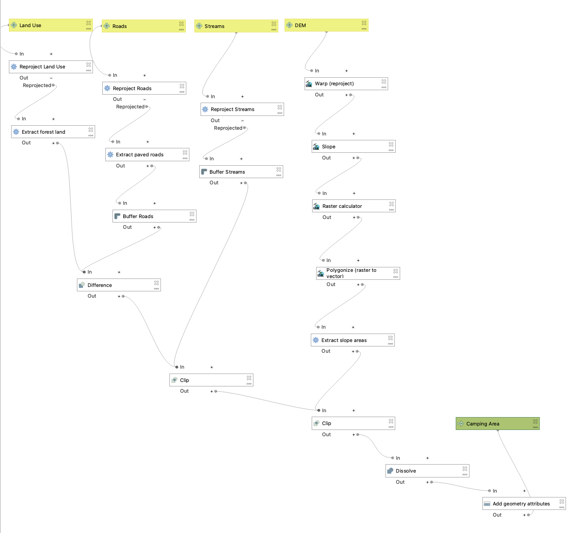

Download for examples:
| What it repeats | Example | |
|---|---|---|
| Batch processing | One tool, many runs | Buffer 10 layers at once |
| Model Designer | A chain of tools, packaged as one new tool | CSV → points → filter → count per county |
| Python (PyQGIS) | Anything | Not today |
They combine: a model can be run as a batch. That is where the real power is.
Just using Python on its own is also a good way!
qgis_process command (more on that at the end)ca_quakes_2015.csv … ca_quakes_2024.csvtime, latitude, longitude, depth, mag, placecal_counties.geojson, which you have used before| Year | M2.5+ events |
|---|---|
| 2015 | 1087 |
| 2016 | 975 |
| 2017 | 854 |
| 2018 | 715 |
| 2019 | 3641 |
| 2020 | 2627 |
| 2021 | 1533 |
| 2022 | 958 |
| 2023 | 901 |
| 2024 | 1049 |
What happened in 2019? We’ll use batch processing and a model to find out where.

The Autofill… menu at the top of each column:
For the output column, pick a file name for the first row with … → Save to File… and QGIS offers to autofill the rest:
out1.gpkg, out2.gpkg, …pts_ca_quakes_2019.gpkgTool: Vector creation → Create points layer from table
longitude → Fill Downlatitude → Fill Downquakes/pts_.gpkg → Fill with parameter values → Input layerWarning
X is longitude, Y is latitude. Swap them and your earthquakes end up in Antarctica.
Rows can change any parameter, not just the input:

Four inputs, about fifteen steps, one output. Today’s will be much smaller.
Processing → Model Designer…
.model3 file, export as an image or a Python scriptSave often. Model Designer will not save your work for you.
When you add a tool to a model, each parameter has a button that sets where its value comes from:
| Source | Meaning | Example |
|---|---|---|
| Value | Typed in, the same every time | Target CRS = EPSG:4326 |
| Model Input | Asked for when the model runs | the CSV file |
| Algorithm Output | The result of an earlier step | the points from step 1 |
| Pre-calculated Value | An expression worked out when the model runs | an output file name |
Algorithm Output is what chains tools together. This is the part people find most confusing, so take it slowly.
@project_folder || '/out/counts_' || base_file_name(decode_uri(@quake_csv, 'path')) || '.gpkg'Three inputs, three steps, one output:
quake_csv (input)
│
▼
[1] Create points layer from table
│
▼
[2] Extract by expression ◄── min_mag (input)
│
▼
[3] Count points in polygon ◄── counties (input)
│
▼
quake_counts (output)How many earthquakes of at least min_mag happened in each county, in the year given by quake_csv?
| Step | Tool | Settings |
|---|---|---|
| Inputs | quake_csv (Vector layer, Geometryless), counties (Vector layer, Polygon), min_mag (Number, default 3) |
|
| 1 | Create points layer from table | X = longitude, Y = latitude, CRS = EPSG:4326 |
| 2 | Extract by expression | to_real("mag") >= @min_mag (to_real turns the text into a number; model inputs become @variables) |
| 3 | Count points in polygon | polygons = counties, points = step 2, field name n_quakes |
quake_countsn_quakesAlways test on one input before you run a batch. If it’s wrong once, it will be wrong ten times.
Processing Toolbox → Models (or Project models) → right-click your model → Execute as Batch Process…
quake_csv: Autofill → Select Files… → all ten CSVscounties: pick cal_counties → Fill Downmin_mag: 3 → Fill Downquake_counts: first row counts_.gpkg → Fill with parameter values → quake_csv| Year | M3+ in search area | M3+ inside CA counties | Top counties |
|---|---|---|---|
| 2018 | 176 | 149 | Riverside, San Benito, San Bernardino |
| 2019 | 1385 | 1309 | Inyo (592), San Bernardino (567) |
| 2020 | 898 | 380 | Imperial, Inyo, Mono |
| 2022 | 270 | 199 | Humboldt |
to_real("mag"): it turns the text into a number before comparing.model3 file can be reused in other projects and sharedEverything you ran is just a command. Processing → History → right-click → copy as qgis_process command:
qgis_process run native:createpointslayerfromtable -- \
INPUT=ca_quakes_2019.csv XFIELD=longitude YFIELD=latitude \
TARGET_CRS=EPSG:4326 OUTPUT=pts_2019.gpkg
qgis_process run native:extractbyexpression -- \
INPUT=pts_2019.gpkg EXPRESSION='to_real("mag") >= 3' OUTPUT=m3_2019.gpkg
qgis_process run native:countpointsinpolygon -- \
POLYGONS=cal_counties.geojson POINTS=m3_2019.gpkg \
FIELD=n_quakes OUTPUT=counts_2019.gpkgModel Designer can also export a model as a Python script. Models and batches are a stepping stone to scripting.
You’ll use both tools on satellite imagery: